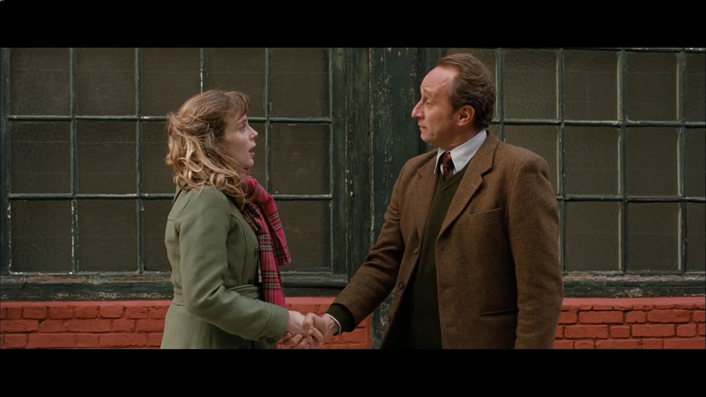
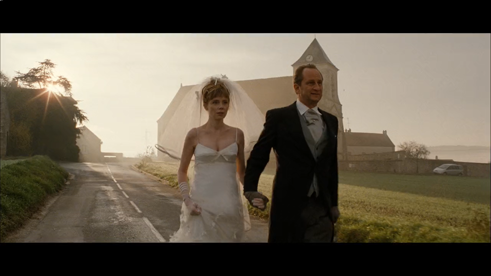

This film portrays two people, Angelique and Jean, who struggle with relationships, but find each other through a cake shop that they both work at. Although their relationship starts as strictly professional, an atmosphere of tension slowly builds between them. As the film goes on, the two face their feelings and their love comes to life, resulting in a relationship either of them thought was possible
The story begins with, and repeatedly returns to Angelique's support meeting in which she gives the narrative of the plot, including her romantic interests, tying in both aspects of the title
Jean ends up attending one of her meetings, which leads to the arch of their relationship as they are able to open up about each other given the support of the other attendants.
The lighting in scenes like the kitchen (5:00 and 27:39 as examples), along with scenes outside (12:00 being one) tends to be brighter, and very high-key
These brighter lighting schemes give a more casual and less tense feel to these scenes featuring everyday situations
Such lighting is seen in the restaurant (16:22) and hotel room scene (55:18)
This is a very significant juxtaposition to the more casual lighting since it appears more when Angelique and Jean are alone together and gives strength to the growing romance between them
He is very shy and anxious when it comes to romance, finding it difficult to open up to women
In the first scene with his therapist, even just talking about the topic to someone he trusts has him very tense
He is changing facial expressions rapidly, avoiding eye contact at times, and breathing a little heavily, including in this medium close up from behind his therapists shoulder
There is a long shot showing both of them during this segment
Including them both in the frame makes them feel confined and as though Jean can't escape the therapists request: he's committed to this character development
Following the scene with the therapist, we are shown a scene with Angelique talking to the other employees as they try to make her a sales rep.
The next scene opens with a pov shot of Angelique watching Jean and an employee talking about the sales rep position
She wants to clear this up so she can be baker so she walks up to Jean, with the camera dollying in behind her, and as she gets close, we see Jean getting closer to her as well
Right as she is about to talk to him about her position, he abruptly tells her he's taking her out to dinner, just as he set out to… he's taking the first step, the power of love is taking over
Not only is this an important moment, but having the mix up with Angelique's position between the therapist scene and this moment, was a great way to distract the audience from Jean and make it all the more shocking when he asks Angelique out. By making this more surprising, we believe that much more in Jean's willpower to overcome his fear
Not only does Angelique agree to go out with Jean, but as she's walking away, the camera dollies back out of the kitchen with her, facing her and showing an out-of-focus Jean in the back.
We also get a first person narration of Angelique's feelings during this moment as she walks off, which reveals that she has been waiting for this and is excited to experience it.
Jeans next assignment is to escalate to touching someone, which occurs at 27:39 with Jean awkwardly walking in the kitchen trying to touch his employees
Some medium and close up shots display the employees discomfort, building tension
A wide shot, containing deep space composition, shows Jean in the spotlight centered in the kitchen, getting stared down by his employees.
Eventually he chases Angelique down when she runs out after a dispute, and after another tense moment, we get a pov shot of Jean finding Angelique's hand, and in a medium shot, the two are both shown in frame, holding hands.
Jean tried to touch other employees, but clearly failed, and only succeeded when he attempted it with Angelique, signifying a connection between the two
Most of the interaction cuts back and forth between them, but when they hold hands, they are both in frame, which can represent them coming together, and even allude to the way a husband and wife stand at their wedding, which is foreshadowing
Their first couple of close interactions happened indoors, the dinner proposal and the restaurant, but this one occurred outside. Changing from indoors to outdoors like this can symbolize Jean getting outside of his comfort zone and overcoming his fears, because of the power that his love for Angelique has over his fear
At the end of the film 1:05:47, Jean chases Angelique down again when she runs away to her support meeting. He finds her at the meeting, which makes the meeting a recurring image.
The group gives Jean a chance to talk, and he discusses how he loves a woman and wants to be with her in a real relationship. He's clearly talking about Angelique.
Once he gets deeper into his feelings for her, the camera starts cutting between the two, and through a series of these shots, we are shown Jean directing his words at Angelique, and she realizes he's talking about her. His love for her finally allows him to open up about his feelings
Despite Jean's confession, the relationship almost doesn't happen because Angelique responds with a monologue about why the relationship wouldn't work and drives Jean out of the room
Even though Angelique tried to explain to Jean why they wouldn't work as a couple, a man in the group stands up and tries to convince her that the two are really meant for each other and that she needs to rethink her rejection. The camera sits right behind Angelique and looks up at the man standing, a shot which portrays that this man talking is taking control of the situation and trying to obtain power so Angelique listens.
The scene cuts to Angelique running out of the meeting after Jean to let him know that she accepts him as a romantic partner and that she wants a relationship. They make it official with another kiss in a scene, again, filmed with some deep space composition displaying the members of the group and kitchen employees in the background. This composition essentially symbolizes how the two worlds have come together with the couple, that these worlds revolve around, in the middle
The film ends with Jean and Angelique's relationship reaching the highest level of getting married, or at least it's supposed to end that way. But Jean and Angelique sneak out and run off.
A long shot follows them as they run away from the wedding with the church in the background. The escape symbolizes that they are happy with where they are, maybe even because they didn't expect to get this far, therefore they don't need anything else like a celebration, just each other
One could also argue the image of them running off in the last shot can symbolize their (specifically Jean's) fear finally leaving them, or them escaping their fear, now that Jean has officially overcome his fear because of the power of his love for Angelique
This relatively short but very well made romance film not only portrays a classic, fairytale style narrative of two people, with little success with relationships, falling in love, but it teaches a valuable lesson about leaving the comfort zone and overcoming fear so we can achieve our greatest and most daunting goals.
Through some interesting cinematography, editing, and acting, this film follows Jean, a chocolate manufacturer, as he perseus his love for Angelique and finally breaks through what has been holding him back this whole time, which is fear, because his love for her was more powerful.